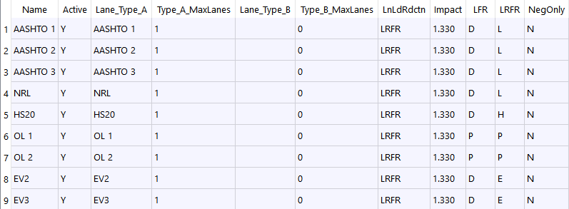

Transverse Load Combinations
Table tb2DTLoadCombDef
- PURPOSE
Define the load combinations to be used on the transfer model. The tbLoadCombDef is NOT used for transverse analysis. The resulting reactions forces from these loads will be directly applied to the floor beam. ( Transverse Reactions )
Parameters
tb2DTLoadCombDef Field
Type
Units
Description
Name
text
Unique name for loading configuration
Active
chr
[Y|N] Y=Run this load case.
Lane_Type_A
text
First Lane-Type Name
Type_A_MaxLanes
int
First Lane-Type’s max number of lanes to load
Lane_Type_B
text
Second Lane-Type Name
Type_B_MaxLanes
int
Second Lane-Type’s max number of lanes to load
LnLdRdctn
text
Lane Load Reduction Set Name
Impact
real
Impact factor. Applied to all lanes.
LFR
text
[D|P] LL-Factor for D=Inventory&Operating P=Overload Inv&Opr
LRFR
text
[H|L| LL-Factor for P|E|N] (H)HL-93 Design (L)Legal (P)Permit-Overload (E)Emergency (N)Not Rated
NegOnly
chr
[Y|N] LRFR Neg only rating flag.
ReportFlag
chr
[Y|N] Shall the capacity trace at 10th-points be included with the Summary Report for this load combination? (Default is ‘Y’)
Example
